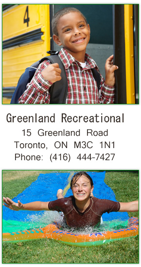

WHAT IS GRASP?
GRASP (Greenland Recreational After-School Program), is a community-based, non-profit corporation which operates a school age Childcare Program monitored by a Volunteer Board of Directors. The program has been in operation since 1985 and is located at Greenland Public School. Although priority is given to students from Greenland Public School, children from neighbouring schools are also eligible for inclusion in the program. The focus of GRASP is to work in harmony with the family, the community and the school to provide an enriched, stimulating and safe environment for the children. The program includes arts and crafts and a wide range of indoor and outdoor activities. The program is designed to meet the needs of children and ensure that children not only acquire new skills, but also form a positive self-image.
PROGRAM STATEMENT
Our Mission
GRASP is committed to providing affordable non-profit childcare to our community through quality programing and qualified staff. Our mandate is to provide high quality childcare to our community, which is designed through pedagogy in a nurturing, child-focused environment at its core.
How Does Learning Happen? Ontario's pedagogy for the early years is the foundation for our program. Pedagogy is the understanding of how learning takes place and the philosophy and practices that support that understanding. Children succeed in programs that focus on active learning through exploration, play and inquiry. Children are competent, capable, curious and rich in potential and thrive in programs where they and their families are valued as active participants and contributors.
| Foundations | Goals for Children | Expectations for Programs |
|---|---|---|
|
Belonging |
Every child has the sense of belonging when he/she is connected to others and contributes to his/her world |
Cultivate respectful relationships and connections to create a sense of belonging among and between children, adults and the world around them. |
|
Well-Being |
Every child is developing a sense of self and health and well-being |
Nurture children's healthy development and support their growing sense of self |
|
Engagement |
Every child is an active and engaged learner who explores the world with her/his senses, bodies and minds |
Provide environments and experiences to engage children in active, creative and meaningful exploration and learning |
|
Expression |
Every child is a capable communicator who is able to express himself/herself in many ways |
Foster communication and expression in all forms |
Our programs are fluid in design with activities to suit each child’s needs through child initiated and staff supported experiences. We believe that children of all ages should have a pedagogy choice. Founded on this principal, the intent is to strengthen the quality of programming and ensure high quality experiences that lead to a positive outcome for the children’s learning, development, health and wellbeing those aliens with How Does Learning Happen?
GOALS and APPROACHES
A. Promote the health, safety and well-being of children, families and educators
Patterns of eating and physical activity that are established in early childhood continue into later life.
- Children are signed in and out daily, arrival and departure times are recorded
- Children are never left unattended
- Adults having contact with children have a completed police reference check
- Snacks menus are approved by a certified nutritionist annually, based on Canada`s Food Guide, are posted n all rooms used by GRASP.
- Food that can be brought into the center is restricted in order to protect children that have allergies
- Educators create positive eating environments with foods and portion sizes that are responsive to children’s cues and hunger and fullness
- Food restrictions are accommodated in partnership with families and caterers
- Children are monitored for symptoms of ill health and parents are informed promptly
- GRASP has installed a security system for access after school hours
- First Aid trained
B. Support positive and responsive interactions among the children, parents, child care providers and staff
GRASP encourages positive and responsive interactions among children, parents and staff. Families are experts on their own children and deserve to be engaged in a meaningful way that allows them to feel that they belong and are valued as GRASP families. Gaining knowledge about children from multiple perspectives helps ensure that programs also value the unique and diverse characteristics of the children’s families and the communities in which they live.
- Children and families are greeted every morning and children experiencing separation anxiety are comforted
- Children's emotions are acknowledged and respected by allowing choices and room for quiet reflection
- Families are encouraged to share in their traditions and celebrations by participating in group sharing, lending items or photos that reflect their ethnicity
- GRASP provides social and educational opportunities for families and educators to build on positive relationships
Strategies to Support and Strengthen Positive Interactions
Educators, children and parents are co-learners building on knowledge
together. When we recognize and build on the strength of families and
the love they have for their children, everyone benefits.
- Educators engage, observe and listen to children and families to build on their strengths by daily communications
- We have an open door policy and encourage on going communication to express thoughts and feeling about the program and their children in a respectful and responsible way.
- The orientation process provides an opportunity for families to share initial information.
- Educators discuss with each other and families the possibilities for children’s further exploration in increasingly complex ways and use this information to plan for meaningful environments that support learning
C. Encourage the children to interact and communicate in a positive way and support their ability to self-regulate
Our staff creates engaging environments and experiences that foster positive interactions and encouraging ongoing communication among all children while keeping in mind their ability to self-regulate and individual needs. Self-regulation is about how a child is able to deal effectively with stressors and then recover. Educators support children`s developing ability to self-regulate by being responsive and attuned to children`s individual cues, arousal states, and responses to various stressors.
- Children`s emotional responses are acknowledged and respected
- Children are encouraged to express their emotions by staying calm and modulating their impulses
- Educators support children to resolve conflicts in a positive constructive manner
- Educators capitalize on daily routines such as snack times and group meetings to make connections and provide opportunity for communication
- Educators facilitate communication between children, modeling listening strategies to support relation-ships.
- Educators provide environments that reduce stressors and support children`s efforts
- Children are encouraged to be aware of the effect of their actions on others
D.
Foster the children’s exploration, play and inquiry;
Evidence from diverse fields of study tells us that when children
are playing, they are learning
Through play and inquiry, young children practice ways of learning and interacting with the world around them that they will apply throughout their lives. Playrooms are planned to allow for children to move freely from area to area
- Educators, as co-learners, engage with children, planning, participating, and learning approaches that support developing skills
- The environment fosters children`s natural curiosity by providing materials that engage the child`s body, mind, and senses
- Toys are open ended to allow for creative use and exploration
- A large variety of toys and materials are accessible to encourage children to investigate through play
Supporting Healthy Development and Learning
- Environments are created that recognize children are individual by documenting their learning
- Providing quiet activities for children who do not sleep
- Connecting with families to ensure environments and experiences reflect the child`s everyday life
E. Plan for and create positive learning environments and experiences;
Children are active rather than passive participants in their own learning process and are competent, capable and curious individuals with rich potentials. Understanding that each child develops at their own rate, we foster the child’s exploration and inquirer through play. Children grow up in families with diverse social, cultural and linguistic perspectives, knowing this we make it an integral part of our program to ensure each child feels that they belong at GRASP and that they are a valuable contributor to our program with the opportunity to succeed.
- Child initiated experiences can be seen on photo documentation boards in each classroom
- Some emergent experiences are documented as they occur and posted
- Child initiated play can be seen regularly as we observe how children use their environment
Every GRASP staff should feel that they belong and they are an integral and valuable contributor of our program. All staff deserves the opportunity to engage in meaningful work.
- Our weekly program plans are developed through observations and incorporate positive learning opportunities and experiences that allows for supported learning environment.
- Educators set up the environment to engage the child`s interest and curiosity
F. Plan for and create positive learning environments and experiences in which each child’s learning and development will be supported;
When educators have an understanding of child development, they are able to provide experiences that challenge children to stretch just beyond what they know and can do.
- Two observations of each child are recorded monthly to provide a basis for programming that is meaningful
- Documentation helps educators to find meaning in what children do and explore ways to engage them
- Planned activities support social, emotional, physical, creative, cognitive and language development
- Educators use ELECT (Early Learning for Every Child Today) as a resource to understand the sequence of development to plan for children`s learning
G. Incorporate indoor and outdoor play, as well as active play, rest and quiet time, into the day, and give consideration to the individual needs of the children receiving child care;
Children thrive in indoor and outdoor spaces that invite them to investigate, imagine, think, create, solve problems and make meaning from their experiences. GRASP incorporates on a daily basis time for indoor and outdoor play, as well as quiet and active opportunities, while taking into consideration the individual child and their needs
- Children`s daily schedules plans for all of the above activities and play times
- Where possible, active play areas and quiet areas are located at opposite ends of the room and playground
H. Foster the engagement of and ongoing communication with parents about the program and their children
A shared view of families as competent and capable, curious and rich in experience informs our relationship with families and has a significant impact on children.
Educators engage in reciprocal relationships with families, learning about, with and from them. Educators share their professional knowledge and experiences and also seek out the knowledge and perspectives of families.
- Ongoing photo displays provide families with a sense of involvement and belonging
- Educators engage in daily communication with families through verbal engagement
- Annual program newsletters are used to share information about events and other information
- Families are requested to complete an annual surveys to provide feedback on all aspects of the program
- Email communication with parents are sent out as reminders , share workshop information and community events
I. Involve local community partners and allow those partners to support the children, their families and staff
Opportunities to engage with people, places, and the natural world in the local environment help children, families and educators, and communities build connections. GREASP seeks involvement from our local community partners and allow them to support our program, parents and staff.
- Children visit local business that may relate to the program and their interest.
- Regular visit to the local library to use the facilities and check out books
- Children visit the Greenland Public School office, library and take walks around the school hallways
- Local firefighters are invited to visit in the summer
- Local dental offices and Toronto Public Health workers are made use of to share information with families
- Use of a variety of local parks weekly over the summer
- Weekly trips on the summer and non-instructional days
J. Support staff, home child care providers or others who interact with the children at a child care centre or home child care premises in relation to continuous professional learning
We support our staff at GRASP by seeking out continuous professional learning opportunities and embracing by considering opportunities present to us. We believe our staff are knowledgeable, caring, resourceful and they too bring diverse social, cultural and linguistic perspectives. Educators are lifelong learners. Our staff are rich in experiences, competent and capable individuals that collaborate with others to create engaging environments and experiences. When educators engage in continuous learning and questioning, exploring new ideas and adjusting practices, they achieve the best outcomes for children, families and themselves.
- Educators are provided with learning opportunities by participating in workshops, staff meetings, City of Toronto ongoing quality assessment training and collaborating with other educators
- GRASP financially supports staff who enroll in a recognized Early Childhood Education Program As per our Staff development Policy
- Educators are provided with resources that promote and support children`s learning
- Educators establish goals in conjunction with the Director during evaluations
- Educators are provided with planning time away from the children
K. Document and review the impact of the strategies set out in clauses (a) to (j) on the children and their families
Early years curriculum is the sum total of experiences, activities and events that occur within an inclusive environment designed to foster children`s well-being, learning, and development and ensure meaningful participation for every child.
- The Board of Directors will review the impact and implementation of our statement on the children, their families and our community annually.
- The Program Statement will be modified as new strategies and ideas are incorporated and updated
- The director will be able to re-evaluate The Program Statement though exit interview annual surveys, staff meeting and building positive relationship with families the children and our community to encourage dialog.
- Educators will be able to re-evaluate and revisit The Program Statement regularly during monthly staff meetings
GRASP is committed to continuous improvement and our Program Statement is a fluid document reviewed and amended to meet the needs of children, families and educators.
This GRASP Program Statement is reviewed annually with all educators/staff or at such time the Program Statement is modified. Staff, students and volunteers review the Program Statement prior to interacting with the children.